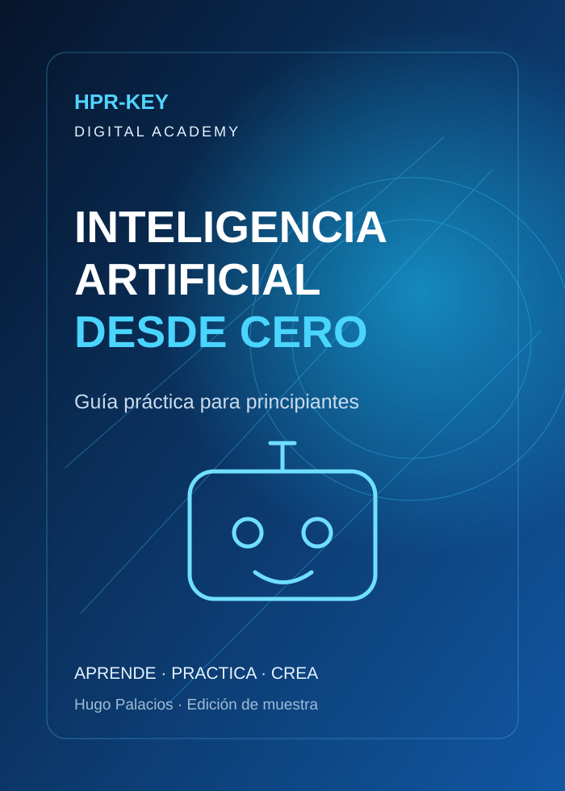

Inteligencia Artificial desde Cero
Conoce el enfoque de nuestra guía educativa antes de solicitarla. Esta muestra no incluye el manual completo.
Ver producto y comprar¿Qué aprenderás?
Fundamentos de inteligencia artificial, usos cotidianos, creación de instrucciones claras (prompts), revisión de respuestas y ejercicios prácticos.
Índice orientativo
- Qué es y qué no es la inteligencia artificial
- Herramientas y aplicaciones
- Cómo escribir buenos prompts
- Ejemplos para estudiar y trabajar
- Buenas prácticas y privacidad
- Ejercicios y proyecto final
Lección de muestra: cómo escribir un prompt
Una instrucción útil suele incluir cuatro elementos: rol o contexto, tarea concreta, detalles relevantes y formato de respuesta.
Actúa como tutor de Excel para principiantes. Explícame la función SUMA con un ejemplo de gastos de una tienda. Usa una tabla sencilla y termina con dos ejercicios para practicar.
Actividad: adapta el ejemplo a una habilidad que quieras aprender. Compara una instrucción vaga con una específica y revisa cuál produce una respuesta más útil.
Recuerda: verifica la información importante y evita introducir contraseñas o datos privados.
¿Quieres la guía completa?
Regresa a la academia, añádela al carrito y envía tu pedido por WhatsApp. El pago y la entrega se coordinan de manera individual.
Ir a HPR-KEY Digital Academy